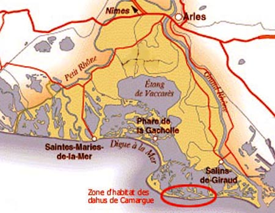

Les zones d'habitat

Fiche d'habitat
- Zone
- Faraman — Beauduc
- Terrain
- Marais, dunes, canaux
- Eau
- Saumâtre uniquement
- Observation
- Nocturne seulement
L'habitat du dahu de Camargue est extrêmement limité : seulement une centaine de spécimens doivent vivre là. La carte ci-dessous indique précisément cette zone, autour du phare de Faraman, et jusqu'au phare de Beauduc à peu près. Attention, ne vous y aventurez jamais sans guide : c'est une zone de marais et de dunes, un dédale de canaux que seuls quelques habitués connaissent. Le mieux est d'y aller à pied à partir de la plage de Piémanson, ou en VTT, mais attention, rouler en VTT sur la plage est vite épuisant. À partir de Beauduc, c'est encore plus risqué, les zones inondées variant d'une heure à l'autre en fonction de la marée. De toute façon, aller à Beauduc en voiture est déjà une expédition...
Comme le dahu ne s'observe que la nuit, il faut prendre une petite tente pour s'abriter, et beaucoup d'eau, car il n'y a que de l'eau saumâtre dans le coin.